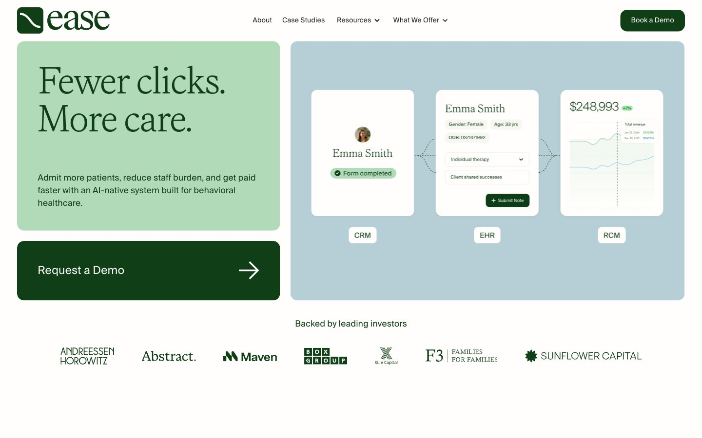

Ease Health 的 Design.md 主题展示，围绕医疗健康、健康生活、浅色界面、AI组织页面。
Explore Ease Health's light Other design system: Forest Green #0f3e17, Cream Canvas #fffefc colors, Suisseintl, Faire Octave typography, and DESIGN.md for...

#0f3e17: #0f3e17#fffefc: #fffefc#e5e7eb: #e5e7eb#000000: #000000#b1dbb8: #b1dbb8#b6ced5: #b6ced5#e1f4df: #e1f4df#cfe7d3: #cfe7d3#333333: #333333#222222: #222222#addbe8: #addbe8#a9e6b0: #a9e6b0display: Interbody: Intermono: ui-monospacehints: Inter,ui-monospace